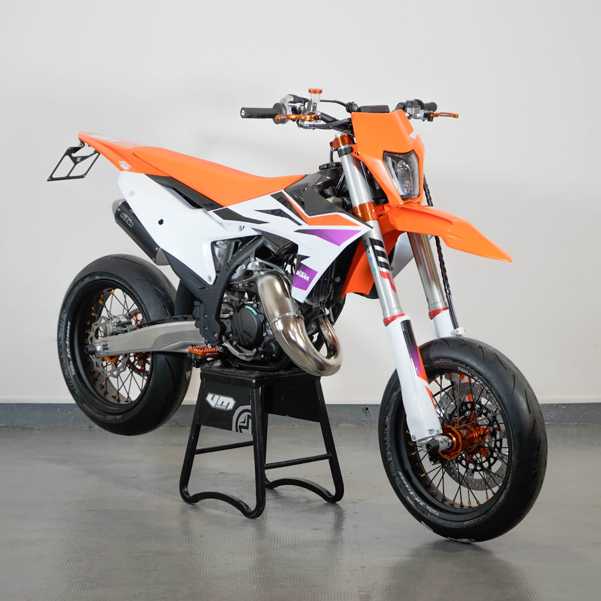

KTM 125 SX
Prezzo: € 13.399
Caratteristiche Tecniche:
- Motore: 1 cilindro, 2 tempi
- Cilindrata: 125 cc
- Potenza: 40 CV
- Trasmissione: 6 marce
- Sospensione anteriore: Forcella a steli rovesciati WP
- Sospensione posteriore: Monoammortizzatore WP
- Peso: 87 kg
- Capacità serbatoio: 7.5 litri